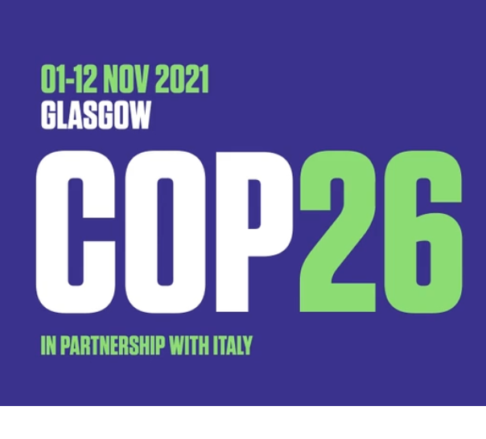

COP 26 se realizará del 1 al 12 de noviembre del 2021

Patricia Espinosa presidenta de CMNUCC
Informó que ha aceptado la propuesta del
Reino Unido de Gran Bretaña e Irlanda del
Norte de llevar acabo la COP 26 sobre cambio
climático del 1 al 12 de noviembre del año 2021.
Las consideraciones principales fueron salvaguardar
la salud y seguridad de los participantes ante la
pandemia de COVID-19.
Después de que la oficina de la convención invito al
Reino Unido que será el próximo presidente de la COP 26,
a realizar una consulta a los países miembros de la convención
y a las organizaciones de la sociedad civil sobre las nuevas
fechas para llevar se acabó la COP.
Las prioridades al considerar una nueva fecha fueron:
La salud de los participantes, el tiempo necesario para
la preparación del evento inclusivo e importante, además
de las negociaciones y acuerdos a los que se tienen que llegar.
La Presidencia entrante ha concluido que, dada la distribución del COVID19
en los países esta fecha presentaría el menor riesgo debido al mayor
aplazamiento y la oportunidad de preparar una COP más ambiciosa y
lograr más y mejores negociaciones entre la parte.
También menciono, que las consultas revelaron unanimidad
en que el aplazamiento de la COP26, no debería significar
un aplazamiento de la acción climática. Por lo que pidió
“no detener las acciones y programas en favor de mitigar
los efectos del cambio climático. Hablo del compromiso
para trabajar con todas las Partes y partes interesadas
para acelerar la acción climática durante los años 2020 y 2021.
Y trabajaran a través de una serie de eventos climáticos
multilaterales, regionales y de alto nivel durante los
próximos 18 meses para lograr esto.
Finalmente menciono, somos conscientes
del desafío que todos enfrentamos,
con el COVID 19 causando muertes, mala
salud e impactos económicos en todos los
rincones del mundo. Mientras trabajamos para
proteger a nuestros ciudadanos y reparar nuestras economías,
también debemos actuar sobre el cambio climático, y enfrentar
estos dos desafíos en conjunto. El presidente de la COP ha
dejado en claro que la recuperación económica de COVID19 es
una oportunidad para construir economías y sociedades más
sostenibles e inclusivas, y una mundo resistente y próspero,
y pondremos esto en el centro de nuestra Presidencia.